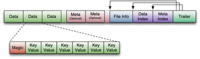
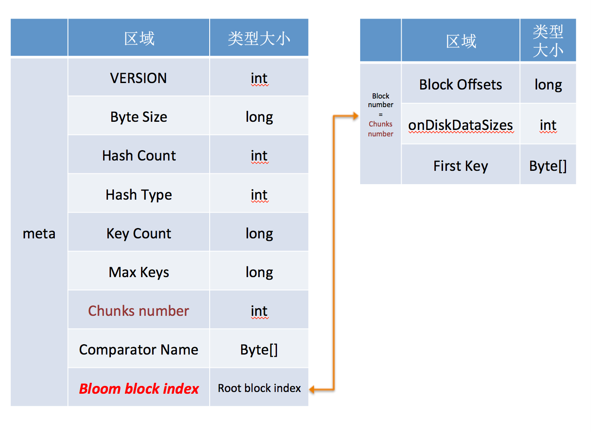
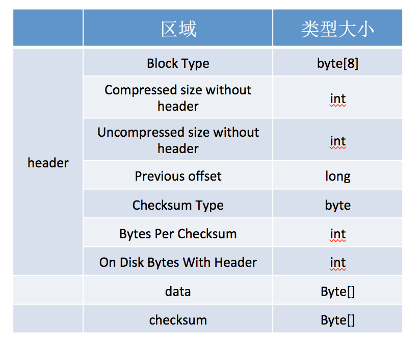
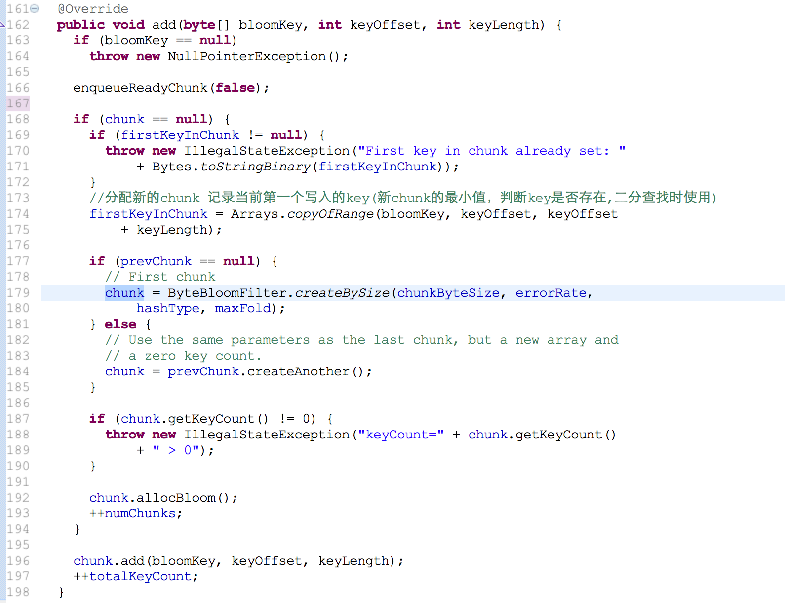
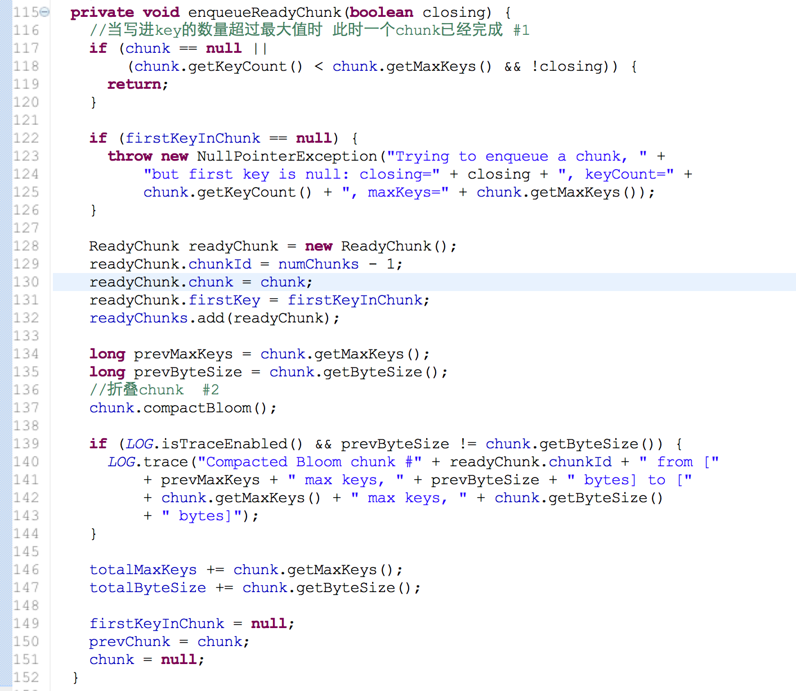
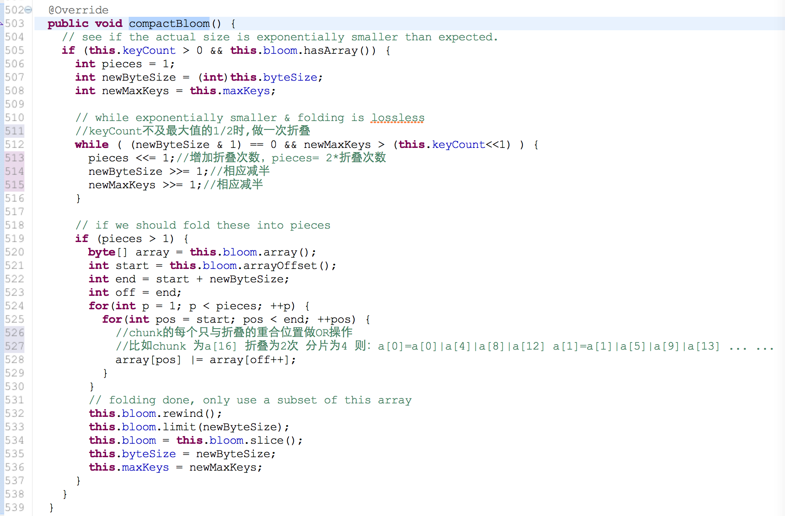
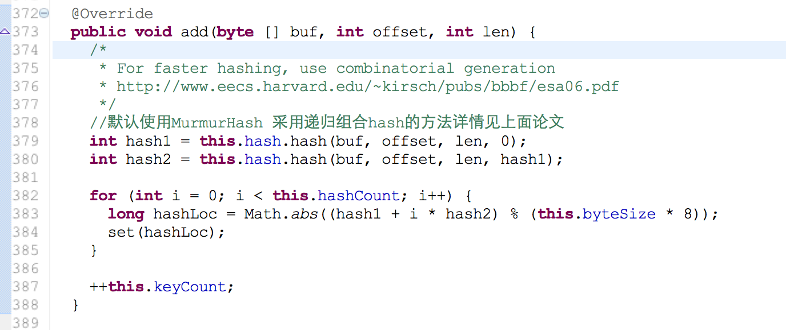
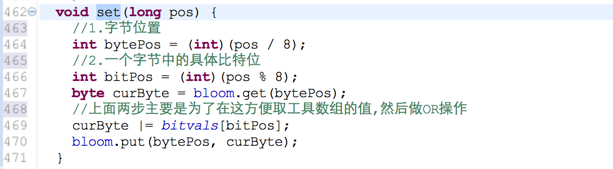
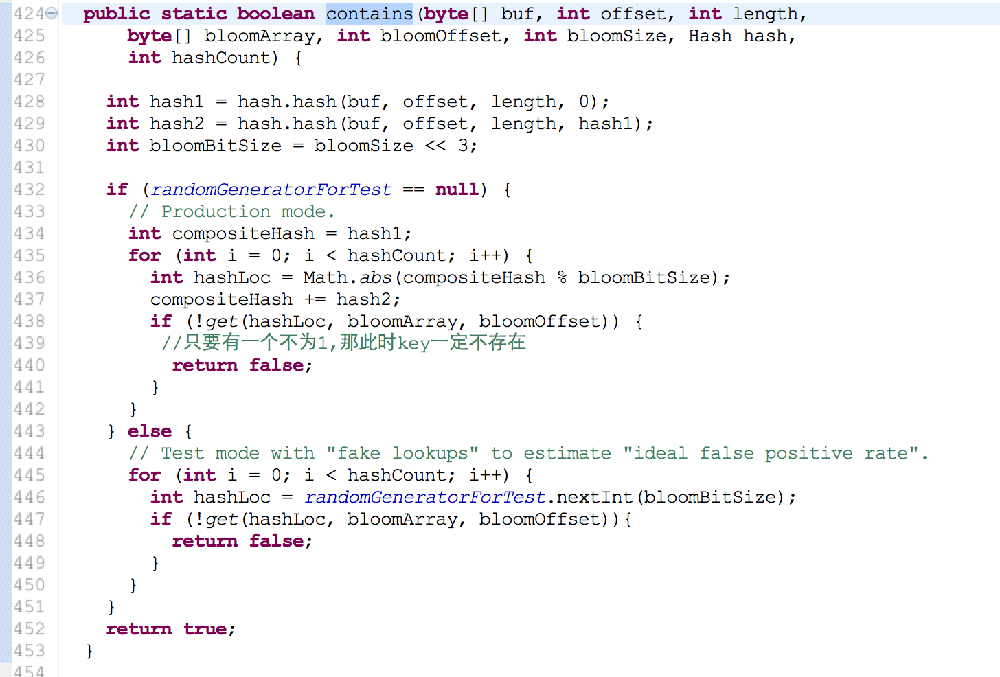

HBase存储架构(一)HFile
HFile Version 1
HFile Version 2 hbase 0.92 v1 --> v2 https://issues.apache.org/jira/browse/HBASE-3857

hbase 0.92 重新设计了HFile结构 基于两个重要改进:1.Add Bloom Block Index Support(HBASE-3763) 2.Build a tree structure data block index inside of the HFile (HBASE-3856) 在facebook情景中 bloom filter 增长到2G data index 有6G 在启动RS全部加载这些数据 很大程度上影响了RS启动速度,对于HFile的改动 主要是增加索引 。HFileV2设计文档：hfile_format_v2_design_draft_0.3.pdf
1.Bloom Filter 什么是bloom filter wiki: http://en.wikipedia.org/wiki/Bloom_filter
hfile v2 对于bloom filter 的处理 分为bloom filter metadata(索引,启动加载) 和实际bloom block
1. bloom filter metadata 结构
2. bloom filter block 结构
3. bloom filter 写入hfile
在flush中 初始化 HFile.Writer(HFileWriterV2) 时候会实例化BloomFilterWriter 对象(默认CompoundBloomFilterWriter实现类) generalBloomFilterWriter = BloomFilterFactory.createGeneralBloomAtWrite(conf, cacheConf, bloomType,(int) Math.min(maxKeys, Integer.MAX_VALUE), writer); hbase bloom filter几个变量值： chunksize [m] -----> 131072*8= computeFoldableByteSize(computeFoldableByteSize(131072*8,7)*8,7) MaxKeys ----->109396=computeFoldableByteSize(131072*8,7) errorRate ------> 0.01 hashCount [k] ------> 7=optimalFunctionCount((int)idealMaxKeys(131072*8,0.01),131072*8)   #1. dynamic bloom filter [论文：Theory and Network Applications of Dynamic Bloom Filters] 在写入key超过最大值时候,会创建新的chunk来存储, 因为我们很难预料需要写入key的数量(n)来设置chunk的大小,一般情况下 动态扩展bloomfilter 会增加错误率，因为chunk的大小没有变化(或者增长因子扩展很小)。但幸运的是hbase是做有序写入key,在做存在判断时候只会在一个chunk里面 错误率不变。 #2.folding dynamic bloom filter 在chunk写入较少key时chunk浪费了很多空间存储,对于这一代价敏感情况下,折叠chunk变得很有效 副作用：错误率增加 (允许的范围之内) bloom filter有一个小技巧就是OR操作 ,比如在合并相同BF参数的chunk 只需要OR就可以了因为1|0=1 1|1=1 当前位置为1 就不用改变 这和计数BF(存储空间开销较大,一般4-6倍左右)不一样 hbase是采取另外创建chunk来存储删除的key   
3. bloom filter 判断
